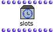

The Self Input Box – Tempin
The Self Input box
| A Self Input box can be added in a patch, to apply or control the characteristics of a Temporalbox from the very inside of the patch . Consequently, the Self Input box is only useful if the patch is represented in a maquette. |
To add a Self Input Box in a patch :
-
Ctrl/ right click in the editor and chooseTemporalBoxes / Self Input -
Cmdclick and type "tempin".
The Self Input box parameters are very similar to those of a musical object. In addition, it has temporal and graphic values, which allow the interaction with the maquette.
1. self : | the Temporalbox itself – like a "self" output | 6. posy : | vertical position |
2. offset : | starting point of the box in milliseconds | 7. stretch-fact : | time stretch factor, expresses the size modification of a TemporalBox. |
3. extend : | calculated duration | 8. sizey : | vertical size of the box |
4. color frame : | box colour | 9. free-store : | a "free" parameter |
5. value : | whatever is connected to the Tempout of a TemporalBox. | 10. reference : | an object connected to the "reference" input of a TemporalBox instance. |
duration = extend * stretch-fact
Accessing the Parameters of the Self Input
Information provided by the Self Input box can be used in the patch with simple connections with other boxes.
For instance, we can use :
- the "posy" value to define the pitch of a chord
- the "offset" value to define the velocity or duration of the chord...
Information can also possibly be returned by the output(s) of the TemporalBox to other TemporalBoxes, in order to define relations between their respective properties or temporal qualities.
The Self Input box shows no inputs, like an instance box. Yet, we sometimes need to access and modify the parameters of a TemporalBox from its internal program. To do so, we can resort to a slots box that will represent this TemporalBox. |  |
 | To create a slots box out of a TemporalBox instance :
|
The slot box can define the properties of the TemporalBox from the patch. Using a slot box amounts to modifying the attributes of the "self" output of the Self Input Box.
Hence, we can use slots for defining :
- the colour of the TemporalBox,
- its position according to other parameters,
- data returned by other boxes...
The slots box must be connected to the "self" output of the self input box otherwise, it has no value.